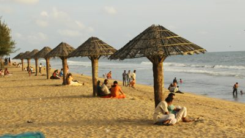
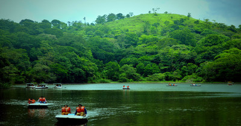
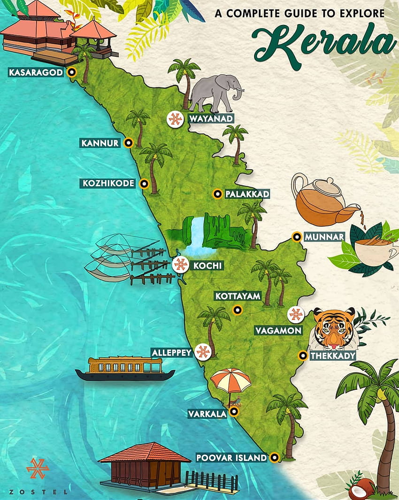

Alappuzha, often called the "Venice of the East," is a picturesque town in Kerala, India.
Known for its serene backwaters, houseboats, and beautiful beaches, it is a hub for tourism.
Alappuzha is also famous for its annual Nehru Trophy Boat Race, a vibrant cultural event.
The town's lush paddy fields and charming canals make it a popular destination for nature
lovers.
Idukki
Idukki, a beautiful district in Kerala, is known for its lush green hills, sprawling tea
plantations, and scenic landscapes. It houses the Idukki Arch Dam, one of the highest in
Asia. Idukki is rich in wildlife, with the Periyar Wildlife Sanctuary being a major
attraction. The district’s cool climate, misty mountains, and tranquil atmosphere make
it a popular destination for nature enthusiasts and adventure seekers alike.

Ernakulam
Ernakulam, often referred to as the commercial capital of Kerala, is a bustling city that
forms part of Kochi. It is known for its vibrant business hubs, historical landmarks like
the Hill Palace, and modern infrastructure. Ernakulam is also home to the famous Marine
Drive promenade, offering stunning views of the backwaters. The city blends tradition
and modernity, making it a key center for trade, tourism, and cultural experiences in
Kerala.

Wayanad
Wayanad, a scenic district in Kerala, is renowned for its lush greenery, rolling hills,
and rich wildlife. Known for its coffee, tea, and spice plantations, Wayanad offers
stunning landscapes dotted with waterfalls, caves, and lakes. Key attractions include
Edakkal Caves, with ancient rock carvings, and Wayanad Wildlife Sanctuary, home to
elephants, tigers, and other wildlife. Its cool climate and serene atmosphere make
Wayanad a popular destination for trekking and nature lovers.

Kerala
Kerala, known as "God's Own Country," is a beautiful state in southern India,
famed for its stunning landscapes, backwaters, and rich cultural heritage. It offers a
diverse mix of beaches, hill stations, and wildlife sanctuaries. Kerala is also known
for its unique traditions like Kathakali, Ayurvedic treatments, and vibrant festivals
such as Onam. With its high literacy rate and focus on healthcare, Kerala stands out
for its social progress and is a top destination for both tourism and quality of life.